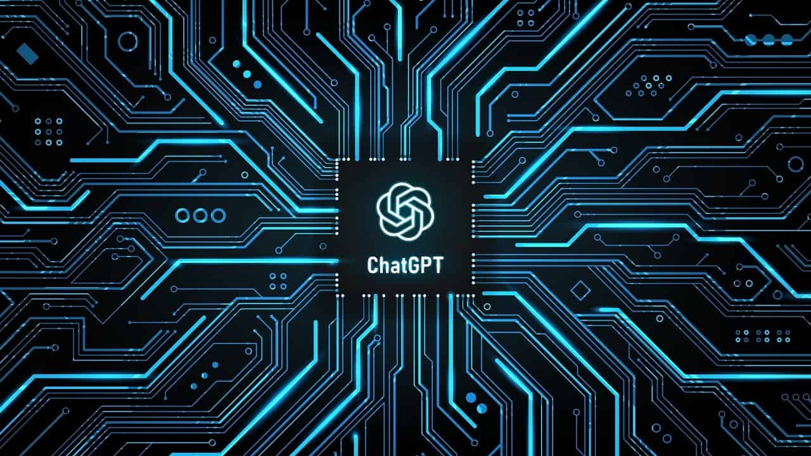

Notícias
ChatGPT ganha acesso à internet e responde perguntas atuais
O ChatGPT recebeu uma atualização que agora permite a navegação web pelo chatbot, com acesso a informações atuais, além de uso de plugins
Ana Luiza Figueiredo 16/05/2023 19h27, atualizada em 16/05/2023 20h59

O ChatGPT recebeu uma atualização que adiciona novos recursos beta para seus usuários Plus. Agora, é possível solicitar ao chatbot o uso de pesquisa na web para responder questões atuais, aproximando a IA da OpenAI de algo que pode ser usado como um buscador no futuro.
Até o momento, realizar perguntas básicas ao ChatGPT cujas respostas necessitavam de informações posteriores a setembro de 2021, quando o treinamento do chatbot terminou, era certeza de se deparar com uma resposta padrão em que ele afirmava não ter acesso a informações atuais.
Até mesmo utilizando o GPT-4, as respostas se repetiam, afinal o ChatGPT não tinha a capacidade de acessar a web.
Mas as coisas mudaram. A OpenAI lançou uma nova atualização, por enquanto exclusiva para usuários do ChatGPT Plus selecionados, em que inclui o recurso beta de navegação web. Ativando este recurso beta, os usuários podem selecionar a navegação web no GPT-4 e fazer perguntas atuais, que o ChatGPT busca na web e oferece respostas corretas.
Por enquanto, o recurso só foi disponibilizado para usuários Plus, mas a OpenAI afirma que pretende lançar o recurso para todos os usuários após o período de testes. A assinatura do ChatGPT Plus tem custo mensal de US$ 20.
Continue lendo mais sobre a notícia no link abaixo...
Follow me...